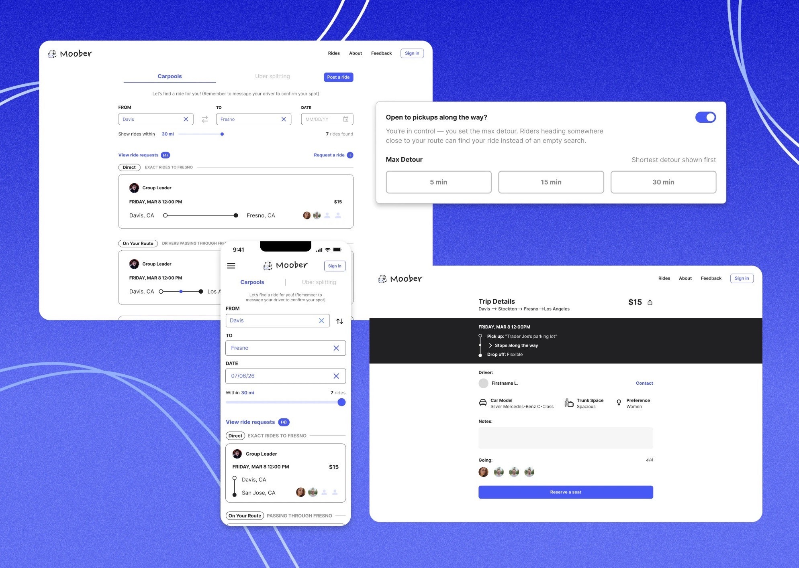

Ian Kim
Work
About
Résumé
Ian Kim is a product designer
with an artist's eye for detail.
Now
Designing Moober and Buzzit
Studying
Design at UC Davis
From
San Francisco
Selected work
Moober
Case study →︎
Search that finds the rides already passing through a rider's town.
Buzzit
Case study →︎
A student marketplace where completed bookings went from 22% to 92%.


 Ian Kim
Ian Kim